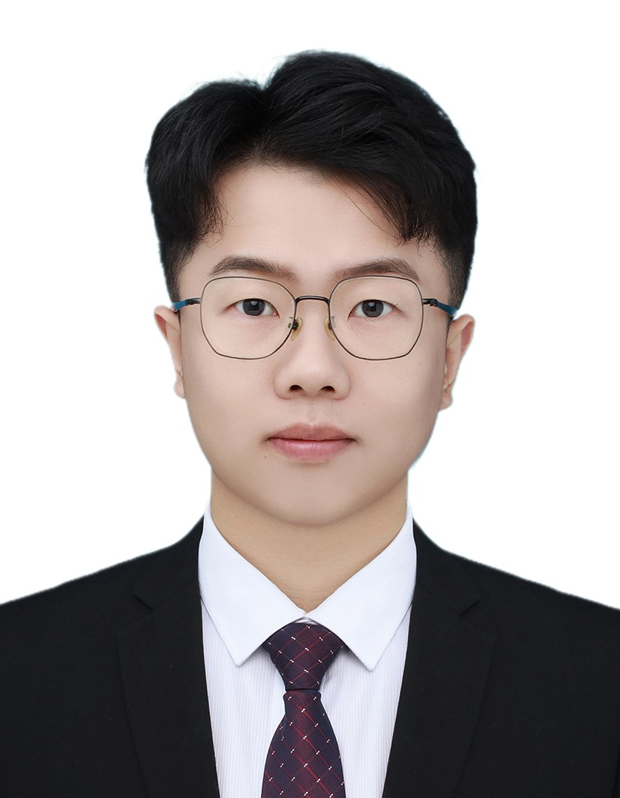

基本信息
张瑞，博士，讲师，硕导。
2023年于上海交通大学电子信息与电气工程学院计算机科学与技术专业获工学博士学位，后任职于江南大学人工智能与计算机学院。
研究方向包括：云边计算（cloud-edge computing）、机器学习（machine learning、reinforcement learning）、决策优化（decision optimization）等。
在IEEE JSAC、ACM TWEB、ACM TOSN、IEEE/ACM TCBB等高水平期刊与会议发表论文多篇。主持江苏省自然科学基金青年项目一项，以主要成员身份参与国家自然科学基金、国际科技合作等多项项目。
工作经历
- 2024-至今：江南大学，人工智能与计算机学院，讲师
教育经历
- 2018-2023：上海交通大学，电子信息与电气工程学院，博士（直博），博导管海兵教授
- 2014-2018：电子科技大学，计算机科学与工程学院，学士
新闻速递
- 2025.09：2026级研究生推免接收工作已启动，欢迎与我联系！
科研项目
- 江苏省基础研究计划自然科学基金--青年基金项目，2024.09-2027.08
- 中央高校基本科研业务费专项资金项目，2025.01-2026.12
- 中国电子学会开放课题项目，2025.01-2025.06
代表性学术成果
- (CCF-B) Zhang R, Zhao X, Li Y, et al. Privacy-Aware Offloading Strategy via Self-Supervised Feature Mapping in the End-Edge-Cloud System[J]. ACM Transactions on Sensor Networks, 2024.
- (CCF-B) Shi H, Zhang M, Ma R H, et al. Edge Caching Placement Strategy based on Evolutionary Game for Conversational Information Seeking in Edge Cloud Computing[J]. ACM Transactions on the Web, 2023.
- (CCF-B) Zhang R, Wang S, Ma R, et al. MCAS-GP: Deep Learning-Empowered Middle Cerebral Artery Segmentation and Gate Proposition[J]. IEEE/ACM Transactions on Computational Biology and Bioinformatics, 2023.
- (CCF-B) Zhang R, Hua Y, Song T, et al. Online Residual-Based Key Frame Sampling with Self-Coach Mechanism and Adaptive Multi-Level Feature Fusion[C]. ICASSP 2023-2023 IEEE International Conference on Acoustics, Speech and Signal Processing (ICASSP). IEEE, 2023: 1-5.
- (CCF-A) Zhang R, Chu X, Ma R, et al. OSTTD: Offloading of splittable tasks with topological dependence in multi-tier computing networks[J]. IEEE Journal on Selected Areas in Communications, 2022, 41(2): 555-568.
招生信息
- 学硕招生专业：计算机科学与技术，软件工程
- 专硕招生专业：计算机技术，软件工程，人工智能
- 基本要求：英语水平良好，编程能力良好，有相关科研经历或项目经验者优先
联系方式
电子邮件: zhangruisg111@jiangnan.edu.cn
地址: 江南大学人工智能与计算机学院B239